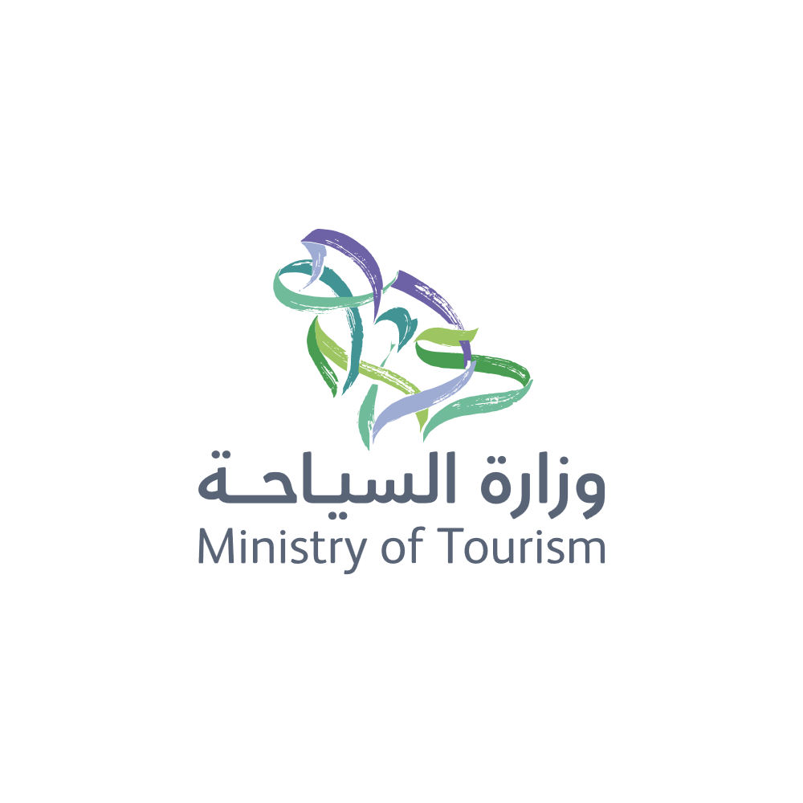
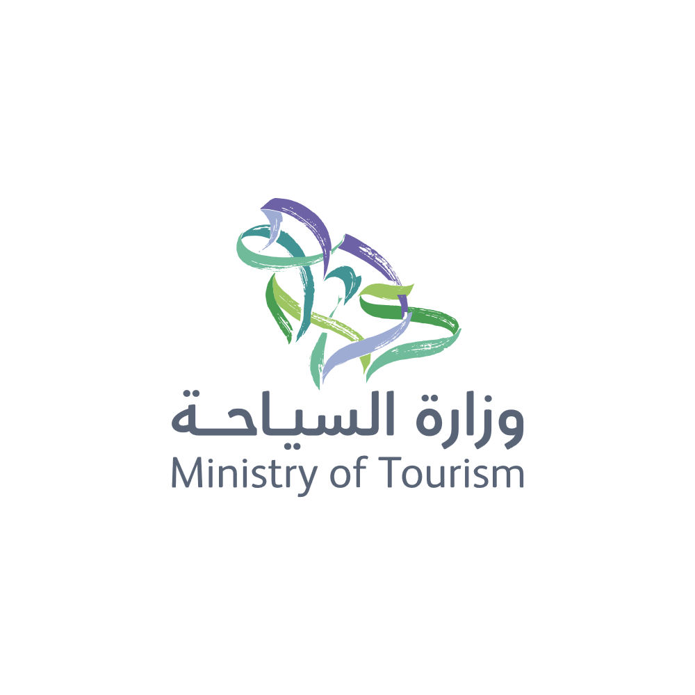

üèúÔ∏è AlUla - The World's Masterpiece
Ancient Wonders and Natural Beauty in Saudi Arabia's Open-Air Museum
About AlUla
AlUla is a living museum of preserved tombs, sandstone outcrops, historic dwellings, and monuments, both natural and human-made, that hold 200,000 years of largely unexplored human history. Located in northwestern Saudi Arabia, AlUla covers 22,561 square kilometers and features dramatic desert landscapes, ancient rock formations, and archaeological treasures that showcase the crossroads of civilizations.
The region served as a vital link on the ancient incense trade routes connecting the Arabian Peninsula with the Mediterranean, Egypt, and beyond. Today, AlUla stands as a testament to the ingenuity and artistry of past civilizations, from the Nabataeans to the Lihyanites, and represents Saudi Arabia's commitment to preserving and sharing its rich cultural heritage.
Historical Significance
AlUla's history spans millennia, with evidence of human settlement dating back to prehistoric times. The region flourished as a crucial trading hub where caravans carrying frankincense, myrrh, and spices would stop and rest. Multiple civilizations left their mark here, creating a unique archaeological landscape that tells the story of human achievement and cultural exchange.
The Kingdom of Lihyan made AlUla its capital around the 5th century BCE, followed by the Nabataeans who established their southern capital here. Later, the region became part of the Roman Empire, and in the 7th century CE, it served as a stop on the pilgrimage route to Makkah.
Key Landmarks and Attractions
üèõÔ∏è Hegra (Madain Salih)
Saudi Arabia's first UNESCO World Heritage Site, featuring over 100 well-preserved Nabataean tombs carved into sandstone rock faces.
üè∫ Dadan and Ikmah
The ancient capitals of the Dadanite and Lihyanite kingdoms, with inscriptions and tombs carved into cliff faces.
üè∞ Old Town AlUla
A historic village of mudbrick and stone houses inhabited from at least the 12th century until the 1980s.
⛰️ Elephant Rock
A stunning natural rock formation resembling an elephant, standing 50 meters tall and sculpted by wind and water over millennia.
üåä Jabal Ikmah
Known as the "Open Library," featuring thousands of inscriptions in multiple ancient languages carved into rock walls.
üé≠ Maraya
The world's largest mirrored building, serving as a concert hall and arts venue that reflects AlUla's dramatic landscape.
Hegra - The Crown Jewel
Hegra, also known as Madain Salih, is AlUla's most famous attraction and Saudi Arabia's first UNESCO World Heritage Site (designated in 2008). This ancient Nabataean city features 111 monumental tombs, most with elaborate facades carved directly into sandstone outcrops.
The Nabataeans, famous for building Petra in Jordan, demonstrated remarkable engineering skills in Hegra. The tombs showcase intricate architectural details, religious symbols, and inscriptions that provide invaluable insights into Nabataean culture, beliefs, and daily life. Unlike Petra, Hegra is remarkably well-preserved, partly due to the dry desert climate and its relative isolation until recent times.
Notable Tombs at Hegra
- Qasr al-Farid (The Lonely Castle): The most photographed tomb, standing alone and unfinished, showcasing the carving process
- Tomb of Lihyan son of Kuza: One of the largest and most elaborate tombs with inscriptions detailing its construction
- Jabal al-Ahmar Tombs: A cluster of tombs with distinctive red sandstone coloring
- Jabal Ithlib: A sacred mountain with a ceremonial hall carved into the rock
üìç How to Reach AlUla
Location
AlUla is located in the Madinah Region of northwestern Saudi Arabia, approximately 1,100 kilometers from Riyadh.
✈️ By Air
AlUla International Airport (ULH): Direct flights from Riyadh, Jeddah, and other major cities. Flight time from Riyadh: ~2 hours.
üöó By Road from Riyadh
12-13 hour drive via Route 65 and Route 375. Well-maintained highways with rest stops along the way.
üöó By Road from Jeddah
6-7 hour drive (approximately 700 km) via Route 5. Scenic route through varying landscapes.
üöó By Road from Madinah
3-4 hour drive (approximately 380 km). Most popular road route for many visitors.
Getting Around AlUla
Once in AlUla, various transportation options are available:
- Car Rental: Available at the airport and in town. Recommended for flexibility
- Hotel Shuttles: Many hotels offer shuttle services to major attractions
- Organized Tours: Comprehensive tour packages include transportation, guide, and sometimes meals
- Private Drivers: Can be arranged through hotels or tour operators
üé´ Visitor Information
⏰ Opening Hours
Winter Season (Oct-Mar):
8:00 AM - 8:00 PM
Summer Season (Apr-Sep):
7:00 AM - 7:00 PM
(Some sites close earlier during extreme heat)
üí∞ Ticket Prices
Single Site Pass: 95 SAR
3-Site Pass: 190 SAR
All-Sites Pass: 250 SAR
Children under 16: Free
Prices valid for one week
üéØ Guided Tours
Heritage Tour: 150 SAR (3 hours)
Full Day Tour: 400 SAR (8 hours)
Sunset Tour: 200 SAR (2 hours)
Languages: Arabic, English, French, Spanish
üì± Booking
All tickets must be booked online at experiencealula.com
Book at least 24 hours in advance. Limited daily visitors to preserve sites.
Best Time to Visit
Peak Season: October to March, with pleasant temperatures (15-25°C) perfect for outdoor exploration.
Winter at Tantora Festival: December to March features special events, concerts, and cultural activities.
Summer: June to August can be extremely hot (35-45°C). Early morning visits recommended.
Avoid: Summer midday heat. Visit early morning or late afternoon during hot months.
ℹ️ Important Information for Visitors
What to Bring
- Comfortable hiking shoes with good grip for rocky terrain
- Sun protection: wide-brimmed hat, sunglasses, high SPF sunscreen
- Plenty of water (minimum 2 liters per person per day)
- Light, breathable, long-sleeved clothing to protect from sun
- Camera with extra batteries and memory cards
- Binoculars for viewing distant rock formations and inscriptions
- Light jacket for cooler desert evenings (winter months)
Visitor Guidelines
- Stay on designated paths to protect archaeological sites
- Do not touch, climb, or deface any ancient structures or rock art
- No flash photography in sensitive areas
- Drones require special permits from Royal Commission for AlUla
- Respect quiet zones and prayer times
- Pack out all trash - leave no trace
- Follow all guide instructions for safety and preservation
Health and Safety
- Stay hydrated - drink water regularly, not just when thirsty
- Apply sunscreen frequently, even on cloudy days
- Watch for signs of heat exhaustion: dizziness, nausea, excessive sweating
- Be aware of rocky terrain and uneven surfaces
- Emergency services: Dial 997 for medical emergencies
- First aid stations available at major sites
- Mobile coverage generally good but can be spotty in remote areas
üè® Accommodation Options
Luxury Resorts
- Habitas AlUla: Eco-luxury resort with canyon views and premium amenities
- Banyan Tree AlUla: Desert wellness resort with villas and spa facilities
- Ashar Resort: Tented camp experience with modern comforts
Mid-Range Hotels
- AlUla Cloud Hotel: Modern accommodation in town center
- Shaden Resort: Family-friendly with traditional design elements
- Sahary AlUla: Comfortable rooms with desert views
Budget Options
- AlUla Old Town Stay: Restored traditional houses
- Desert Camp Sites: Authentic Bedouin-style camping experiences
- Guesthouses: Local hospitality in residential areas
Booking Tip: Reserve accommodations well in advance, especially during winter season and festival periods. Many properties offer packages including meals and tours.
üçΩÔ∏è Dining Experiences
Traditional Cuisine
- Suhail Restaurant: Authentic Saudi dishes in Old Town setting
- AlJadidah Restaurant: Traditional recipes with modern presentation
- Bedouin Dining Experiences: Meals prepared in traditional style under the stars
International Options
- Maraya Restaurant: Fine dining with stunning views
- Cloud 7: International menu at Cloud Hotel
- Resort Restaurants: Various international cuisines at luxury properties
Cafes and Light Bites
- AlUla Arts Café: Coffee and pastries near Old Town
- Heritage Village Cafés: Traditional coffee and dates experience
- Visitor Center Cafeteria: Quick meals and refreshments
Local Specialties to Try
- Kabsa (spiced rice with meat)
- Jareesh (crushed wheat with meat)
- AlUla dates - famous for their quality
- Traditional Arabic coffee with cardamom
- Fresh citrus fruits from local farms
üé® Activities and Experiences
Adventure Activities
- Rock Climbing: Guided climbs on sandstone formations (Nov-Mar)
- Hiking Trails: Various difficulty levels through canyons and valleys
- Hot Air Ballooning: Sunrise flights over ancient sites (pre-booking required)
- Stargazing Tours: Exceptional dark sky viewing with expert guides
- Cycling Routes: Designated paths through scenic landscapes
Cultural Experiences
- Archaeological Tours: Expert-led explorations of ancient sites
- Art Installations: Contemporary art pieces integrated with landscape
- Traditional Crafts Workshops: Learn pottery, weaving, or calligraphy
- Heritage Village Visits: Experience traditional lifestyle and hospitality
- Historical Reenactments: Seasonal performances depicting ancient life
Photography Opportunities
- Sunrise at Elephant Rock
- Golden hour at Hegra tombs
- Star trails over desert landscape
- Reflection shots at Maraya building
- Sunset from Old Town viewing points
üìÖ Winter at Tantora Festival
AlUla's signature cultural festival runs from December to March, featuring:
- World-Class Concerts: International and regional artists perform at Maraya
- Heritage Events: Traditional performances, crafts demonstrations
- Art Exhibitions: Contemporary and traditional art displays
- Culinary Experiences: Celebrity chef dinners and food festivals
- Sports Events: Desert marathons, cycling races, equestrian shows
- Film Screenings: Outdoor cinema under the stars
- Wellness Programs: Yoga, meditation sessions in natural settings
Booking: Festival events require separate tickets, available on experiencealula.com
üí° Visitor Tips
- Plan to spend minimum 2-3 days to see major attractions properly
- Book tickets and accommodations at least 2 weeks in advance
- Download offline maps as internet can be unreliable in remote areas
- Visit Hegra first thing in the morning for best light and fewer crowds
- Hire a guide for at least one day to understand historical context
- Allow extra time for photography - the landscapes are stunning
- Respect local customs and dress modestly
- Start tours early to avoid midday heat
- Check the Experience AlUla app for real-time updates
- Purchase local dates and crafts as souvenirs from authorized vendors
üìû Contact Information
General Inquiries
üìß Email: info@rcu.gov.sa
üì± Phone: +966 14 382 0000
üåê Website: experiencealula.com
Bookings & Reservations
üìß Email: tickets@experiencealula.com
üì± Phone: +966 14 382 0055
üïê Service: 8 AM - 8 PM daily
Emergency Services
üö® Tourist Police: +966 14 382 0911
üöë Medical Emergency: 997
üöì Police: 999
Social Media
üì∑ Instagram: @ExperienceAlUla
üîó Twitter: @RCU_SA
üìò Facebook: Experience AlUla